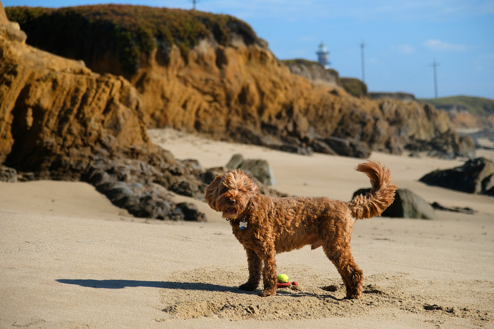
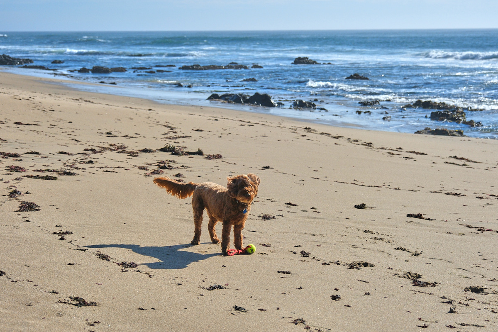
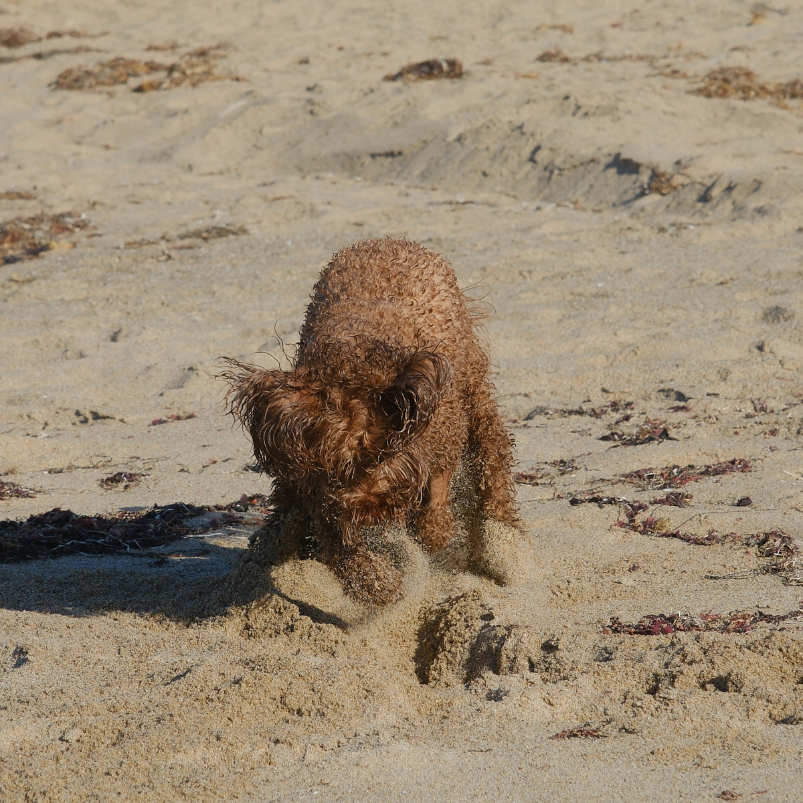
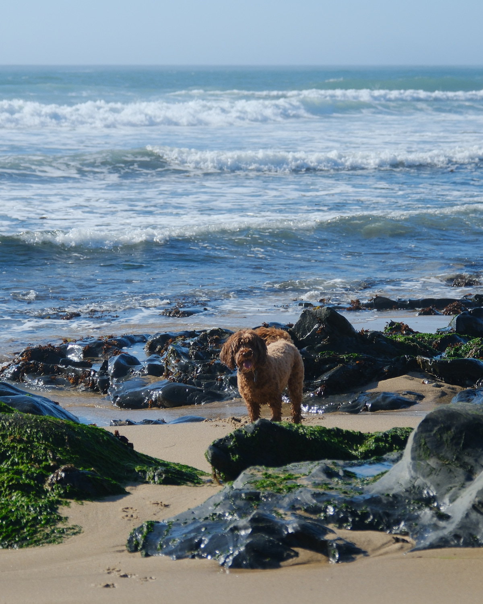
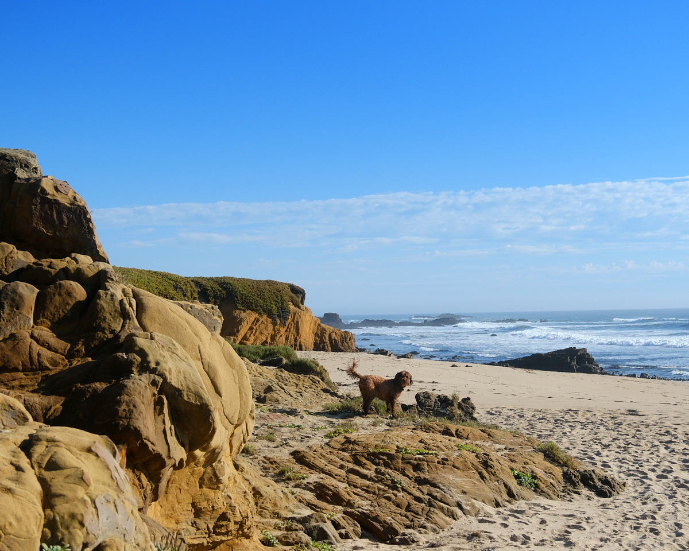

Rule #1: The Beach is the Best Place
You never know when you might go to the beach, so always look for the signs of a car ride. As you jump in the back seat, be very excited and watch out the front window very attentively. When you smell the ocean, it’s time to start making little whelps. When the car parks at a beach, go wild!
Rule #2: The Purpose is to Play Ball
A beach is the best place to run after a ball. Ignore other dogs. The only thing that matters is getting your person to throw a ball. If no ball is available, get them to throw a stick.

Rule #3: Always Anticipate
Anticipation is key. Note which way the ball is likely to be thrown and start running at top speed. Capture the ball. Style points accrue if you chase the ball at lightning speed then hit the brakes hard, kicking up a huge amount of sand. Come to a stop just over the ball. However, beware: the sand-slide can be a tricky move. If you can’t find the ball after kicking up all that sand, then you’ll look like a fool. So keep your eye on the ball, then pounce!

Rule #4: Never Fetch
After the capture, don’t indulge your owner’s fantasy that what dogs do is fetch. No, no, no! There are only three acceptable things to do after capturing the ball:
- Work on shredding it with your teeth and paws.
- Walk away from your owner, drop it, and start barking
- Dig a hole to bury it.

Rule 5: To be a SuperDog, Retrieve from Water
If you capture a ball in the water, you will have realized a dog’s supreme purpose. It is important to do this with style. Study the ball in the water. When you had it centered in your beady eyes, pounce on it. A good pounce should bury both your head and the ball in the water, so you can come up triumphantly. Now bring the ball to the beach.

Rule 6: Have a Victory Parade
Superdogs bring the ball up out of the water onto the beach, which might look vaguely like fetching. Make sure your person is NOT deceived. On no circumstance will you bring it to your person: No, no, no! Instead, now is the time for a parade. Adopt your best prancing position–head proud, tail high in the air–and march away from your owner. Show the world that you are indeed a superdog!
There is one exception to the rule that you should always prance away from your person. If you need to shake off your soaking wet coat, it is acceptable to walk towards your person so they can share in the wet spray!
Rule 7: Communicate, Communicate, Communicate
Since your person lacks a dog brain, you will need to bark constantly to remind them know how exciting the beach is and to get them to pick up the pace of the game. Three key commands to teach your person:
- Throw it, throw it, throw it!
- Fetch it, fetch it, fetch it! (you didn’t think I was going to do that?!?!?!)
- Toss it in the water, in the water, in the water!
